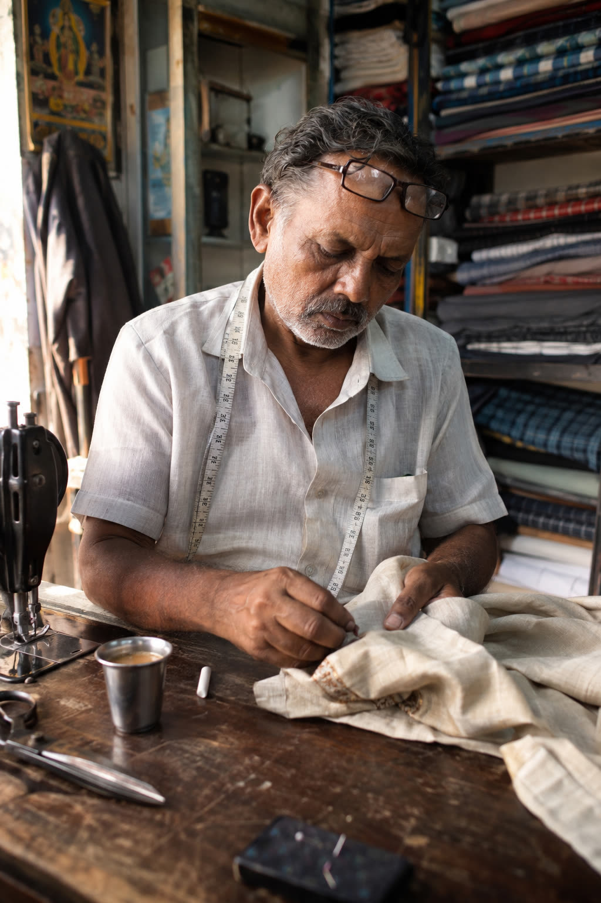
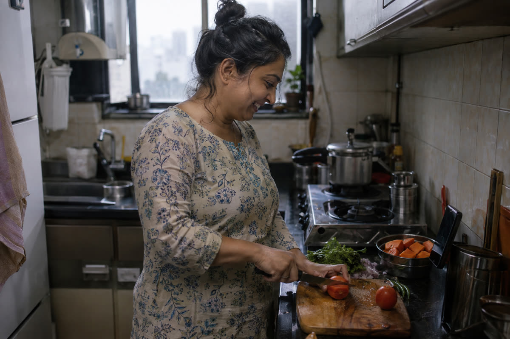
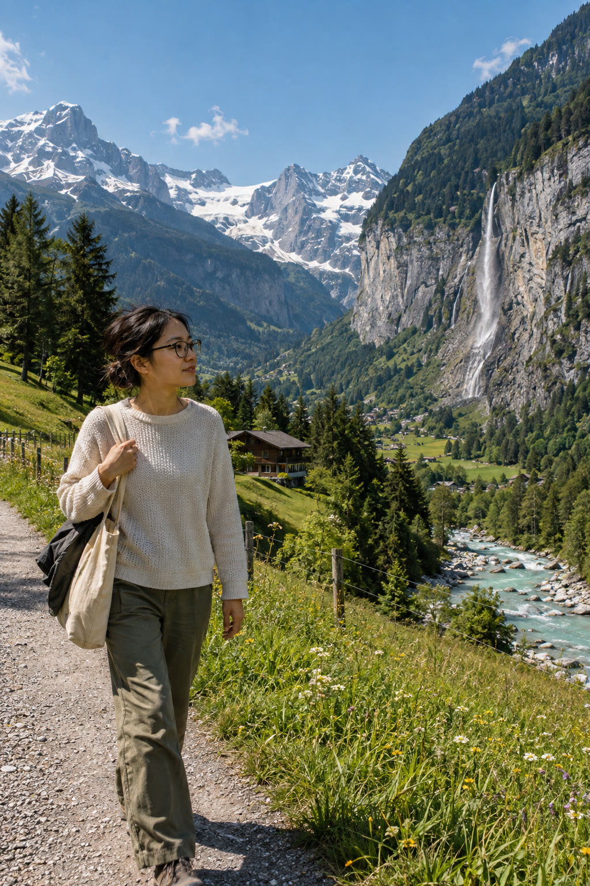
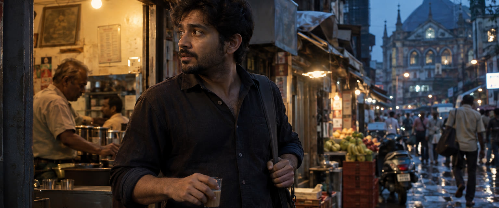

The photoreal master prompt
Which model this is
"GPT Sunburst 2.5" is OpenAI's GPT Image 2.5 Sunburst (gpt-image-2.5-sunburst), released Sep 8 2026 verified. It is the quality model of the pair. Its sibling, Flare, is the fast one. OpenAI's guide: start with Sunburst when quality is the priority. It is an image model, it does not make video.
Where to run it: over the API (or a platform that exposes it) you pick Sunburst by name and set quality to high or above. A field test says the ChatGPT app runs the fast model and doesn't let you choose Sunburst unverified, so for this quality, use the API.
What actually moves this model
- Format is free. Paragraphs, labelled sections or tags all work. OpenAI recommends labelled sections (scene, subject, details, constraints) for complex asks, so the template uses them.
- Say "photorealistic" / "real photograph" out loud. The guide says to request it explicitly.
- Camera specs are cues, not physics. Lens and aperture steer the look (depth of field, perspective, compression). They don't simulate a real sensor. So describe the visible result too: what is sharp, what is soft.
- Plain-language exclusions work. OpenAI's own realism example ends with "Avoid cinematic lighting, dramatic color grading, or stylized composition" and "No glamorization, no heavy retouching". There is no separate negative-prompt field. The AVOID line is written that way.
- Name one light source and its direction. The most common tell is highlights and shadows that disagree, or "beautiful dramatic lighting" that comes from nowhere.
- Ask for imperfection. Left alone, the model retouches: waxy skin, clean surfaces, perfect teeth. Pores, flyaways, creases and dust have to be asked for.
The master template
Create a photorealistic image that looks like a real frame from a film, shot on a real cinema camera: cinematic, but never artificial. Intended use: [ad / social post / website hero / lookbook]. SCENE: [where, specific: e.g. a small Mumbai apartment kitchen, steel utensils on the counter, monsoon light]. Time of day: [early morning / golden hour / overcast noon / night under a single tungsten bulb]. Add ordinary everyday clutter that belongs there. SUBJECT: [who or what, age, clothing, material]. Action: [what they are doing, caught mid-moment]. Framing: [close-up / medium / full body, feet included]. Gaze: [looking at X, not at the camera]. Hands: [what the hands hold and how]. CAMERA: shot on a [full-frame DSLR, e.g. Canon EOS 5D Mark IV / digital cinema camera, e.g. ARRI Alexa Mini, if CINEMATIC below asks for it] with a [35mm / 50mm / 85mm] lens, [1/250s], ISO [100 / 200 / 800 / 1600]. [Eye-level / slightly high / low] angle. Pick ONE depth mode: [PORTRAIT: f/1.8 to f/2.8, focus on the eyes, the background falls softly out of focus] or [LANDSCAPE / SCENE MATTERS: f/8 to f/11, focused near the hyperfocal distance so the subject AND the far background are both sharp]. BACKGROUND (use whenever the background matters): build it in clear layers: [foreground detail] / [subject] / [midground: trees, river, buildings] / [far background: mountains, skyline]. Each layer has its own texture, scale and cast shadows. Distant detail stays crisp and readable: individual trees, rock faces, snow edges, ridgelines. Air is clear and dry, like the day after rain; distance shows only a slight natural cooling of colour, never a milky haze. LIGHT: one readable light source: [soft window light from camera-left / hard direct sun from camera-left at mid-morning / on-camera flash]. Shadows fall [to the right, under the chin]; highlights and shadows must agree with that source. Outdoors in sun: hard-edged cast shadows on the ground, on the subject and across the far terrain, with sunlit faces bright and shaded sides clearly darker. [Weak fill from a white wall.] CINEMATIC: frame it like a still from a feature film. Aspect: compose for [2.39:1 widescreen / 16:9 / 9:16 vertical], with the subject on a rule-of-thirds line and room to look into. Lens: [35mm for scene and story / 50mm for natural people shots / 85mm for close emotion], camera at a deliberate height, one clear leading line or foreground layer (a door frame, a branch, a shoulder) to add depth. Light: motivated by a real source in the scene, strong contrast, a clear key side and a shadow side, with a subtle edge of light separating the subject from the background. Depth of field: shallow for portraits (f/1.8 to f/2.8), deep for landscapes (f/8 to f/11), never a fake cut-out blur. Grade: [a restrained film look, e.g. Kodak Vision3 500T / Portra 400], gently lifted blacks, skin tones kept true, one controlled colour palette (e.g. [deep greens and warm skin / teal shadows and amber practicals]). The moment: a caught instant with a story in it, mid-action, not a posed shot. TEXTURE: real skin with visible pores, fine lines, slight unevenness in tone, a few flyaway hairs; fabric creases and lint; worn edges, fingerprints and dust on surfaces. Nothing freshly polished. FINISH: the grade from CINEMATIC applied lightly, like a real film scan: fine film grain, slight vignetting, highlights that roll off instead of clipping, no sharpening halos. AVOID: glamour retouching, smooth or waxy skin, perfect symmetry, perfectly white teeth, HDR look, heavy teal-and-orange grading, crushed or fully black shadows, fake anamorphic streaks and lens-flare overload, rim light with no source in the scene, over-saturated colours, oversharpened edges, stock-photo posing, haze, fog, mist, bloom or glow, flat shadowless light, a soft painted-looking backdrop, background layers that merge into one flat sheet, and any text, logos or watermarks unless quoted above.
5 rules
- One change per try. If a render is off, fix the one thing that is wrong (light, skin, pose) and re-run. Stacking ten fixes makes it impossible to tell which one worked.
- Quality high or above. In a public field test, Sunburst took about 28s at high and 48s at xhigh unverified. Leave it on auto and you don't know what you got.
- Size is a setting, not a word. Set the pixel size in the request (up to 3840 wide per the field test unverified). Typing "4K" in the prompt does nothing reliable.
- Keep tiny text out. Small numbers and labels still smear. In the test below, the tape measure numbers came out garbled. Crop it, keep it out of focus, or put exact wording in quotes.
- To edit, don't regenerate. Feed the render back in: "change only X, keep face, pose, light and framing the same". Sunburst is built for precise edits.
Examples 1-3 below were made before the CINEMATIC block existed, so their FINISH/AVOID still read "ungraded" or "no cinematic grading", which is fine for a plain photo, but cinematic is now the default: fill in CINEMATIC and let FINISH/AVOID follow it, as example 4 does.
Example 1: portrait

Sunburst, quality high, 1024x1536, first try, no edits. The weak spot is the tape-measure numbers (rule 4).
Show the prompt
Create a photorealistic image that looks like a real, unedited photograph taken on a real camera. Intended use: editorial portrait for a website. SCENE: a small tailoring shop in an old Bengaluru market, bolts of cloth stacked on wooden shelves, a sewing machine and chalk on the counter, a steel tumbler of tea. Late afternoon. SUBJECT: a tailor in his late fifties, grey stubble, reading glasses pushed onto his forehead, a measuring tape around his neck, half-sleeve cotton shirt. Action: pinning a hem on a kurta, caught mid-moment. Framing: medium close-up, chest up, hands visible. Gaze: looking down at the fabric, not at the camera. Hands: fingers holding a pin against the cloth. CAMERA: shot on a full-frame DSLR, Canon EOS 5D Mark IV, with an 85mm lens at f/2.0, 1/200s, ISO 800. Eye-level angle. Focus sits on his eyes and hands; the shelves behind fall softly out of focus. LIGHT: one readable light source: warm late-afternoon daylight from the shop entrance on camera-left. Shadows fall to the right side of his face; highlights and shadows agree with that source. Weak fill from the white-washed wall. TEXTURE: real skin with visible pores, sun spots, deep lines around the eyes, uneven stubble; shirt creases and a faded collar; worn wooden counter with chalk dust. FINISH: natural colour balance like an ungraded camera file, subtle fine sensor grain, slight vignetting, highlights that roll off instead of clipping, no sharpening halos. AVOID: glamour retouching, smooth or waxy skin, perfect symmetry, perfectly white teeth, HDR look, cinematic colour grading, dramatic rim lighting, over-saturated colours, oversharpened edges, stock-photo posing, and any text, logos or watermarks.
Example 2: lifestyle

Sunburst, quality high, 1536x1024, first try, no edits.
Show the prompt
Create a photorealistic image that looks like a real, unedited photograph taken on a real camera. Intended use: social post for a health app. SCENE: a small Mumbai apartment kitchen in the morning, steel utensils and a pressure cooker on the counter, a phone leaning against the tiled backsplash, a bowl of cut papaya, monsoon-grey light outside the window. SUBJECT: a woman in her mid-thirties in a faded cotton kurta, hair in a loose bun. Action: chopping vegetables on a wooden board while glancing at the phone screen, mid-laugh. Framing: medium shot, waist up, both hands visible. Gaze: looking at the phone, not at the camera. Hands: one hand holding a knife, the other steadying a tomato. CAMERA: shot on a full-frame DSLR, Nikon D850, with a 35mm lens at f/2.8, 1/160s, ISO 1600. Slightly high angle, like a friend standing near the fridge. Focus sits on her face; the window behind falls softly out of focus. LIGHT: one readable light source: soft overcast window light from camera-right. Shadows fall to the left; highlights and shadows agree with that source. The white fridge adds weak fill. TEXTURE: real skin with visible pores, slight under-eye shadow, a few flyaway hairs; kurta creases; water droplets and a turmeric stain on the counter, a scratched steel sink. FINISH: natural colour balance like an ungraded camera file, subtle fine sensor grain, slight vignetting, highlights that roll off instead of clipping, no sharpening halos. AVOID: glamour retouching, smooth or waxy skin, perfect symmetry, perfectly white teeth, HDR look, cinematic colour grading, dramatic rim lighting, over-saturated colours, oversharpened edges, stock-photo posing, readable text on the phone screen, and any logos or watermarks.
Example 3: landscape behind a person

Sunburst, quality high, 1024x1536. The fix for flat, hazy backgrounds: f/9 hyperfocal instead of f/2.8, hard sun instead of backlight, a layered BACKGROUND block, and haze/fog/bloom in AVOID.
Show the prompt
Create a photorealistic image that looks like a real photograph taken on a real camera. Intended use: travel editorial / social post. SCENE: a meadow path above Lauterbrunnen in the Swiss Alps, early summer, mid-morning. Clear sky with a few small white clouds. SUBJECT: an East Asian woman in her late twenties wearing thin black-framed spectacles, hair loosely tied with a few flyaway strands, cream knit sweater, olive trousers. A worn natural canvas tote bag over her shoulder with a folded jacket poking out. Action: walking along the path, caught mid-step, one hand on the tote strap. Framing: medium-wide shot, knees up, standing left of centre, with plenty of the valley visible on the right. Gaze: looking off toward the river, not at the camera. CAMERA: shot on a full-frame DSLR, Canon EOS 5D Mark IV, with a 35mm lens at f/9, 1/400s, ISO 100. Eye-level angle. LANDSCAPE depth mode: focused near the hyperfocal distance so she AND the far mountains are both sharp. BACKGROUND: clear layers. Foreground: wildflowers and uneven grass along the gravel path, with her cast shadow on it. Midground: a glacier-fed turquoise river over pale stones, a wooden fence, dense dark spruce trees with individual trunks visible, a wooden chalet. Far background: steep limestone valley walls with a thin waterfall, then grey rock peaks with snowfields; every ridgeline, rock face, gully and snow edge is crisp and readable. The air is clear and dry, like the day after rain; distance shows only a slight cooling of colour, never a milky haze. LIGHT: hard direct sun from camera-left at mid-morning. Hard-edged cast shadows: her shadow on the path, tree shadows on the grass, deep shadows in the rock gullies and on the shaded sides of the peaks, sunlit faces bright. Shadows fall to the right; every layer agrees with the same sun. Slight glare on one spectacle lens. TEXTURE: real skin with visible pores, slight natural unevenness, a few flyaway hairs; knit fibres and pilling on the sweater; creases and a scuffed base on the canvas tote; wet stones and moss by the river. FINISH: a restrained green cinematic film look, like Kodak Portra leaning toward deep greens: rich but natural greens in the meadow and spruce, gentle teal in the river, warm true skin tones, full contrast with real blacks in the shadows. Fine film grain, highlights that roll off instead of clipping, no sharpening halos. AVOID: haze, fog, mist, bloom or glow, flat shadowless light, a soft painted-looking backdrop, mountains that merge into one flat sheet, blurred background, glamour retouching, smooth or waxy skin, HDR look, neon or over-saturated greens, oversharpened edges, stock-photo posing, and any text, logos or watermarks.
Example 4: the template, filled, cinematic by default

Sunburst, quality high, 1536x1024 cropped to 2.39:1, first try, no edits. Every bracket filled, nothing else changed.
Show the prompt
Create a photorealistic image that looks like a real frame from a film, shot on a real cinema camera: cinematic, but never artificial. Intended use: film still / social post. SCENE: a narrow street in old Mumbai near Crawford Market, wet stone after rain, hanging shop signs out of focus, a parked scooter, fruit crates. Time of day: blue hour just after sunset, shop tungsten bulbs switching on. Add ordinary everyday clutter that belongs there. SUBJECT: a man in his early thirties, stubble, dark cotton shirt with rolled sleeves, a canvas messenger bag. Action: stepping out of a chai stall holding a small glass of tea, turning his head as someone calls him. Framing: medium shot, waist up. Gaze: looking off-frame left, not at the camera. Hands: one hand holding the tea glass by its rim, the other on the bag strap. CAMERA: shot on a full-frame cinema camera, ARRI Alexa Mini with a 50mm lens, 1/50s, ISO 800. Eye-level angle. Pick ONE depth mode: PORTRAIT: f/2, focus on the eyes, the street behind falls softly out of focus. BACKGROUND (use whenever the background matters): build it in clear layers: [foreground detail] / [subject] / [midground: trees, river, buildings] / [far background: mountains, skyline]. Each layer has its own texture, scale and cast shadows. Distant detail stays crisp and readable: individual trees, rock faces, snow edges, ridgelines. Air is clear and dry, like the day after rain; distance shows only a slight natural cooling of colour, never a milky haze. LIGHT: one readable light source: the warm tungsten bulb of the chai stall from camera-right. Shadows fall to the left, under the chin; highlights and shadows must agree with that source. Outdoors in sun: hard-edged cast shadows on the ground, on the subject and across the far terrain, with sunlit faces bright and shaded sides clearly darker. Weak cool fill from the blue evening sky. CINEMATIC: frame it like a still from a feature film. Aspect: compose for 2.39:1 widescreen, with the subject on a rule-of-thirds line and room to look into. Lens: 50mm, camera at a deliberate height, one clear leading line or foreground layer (a door frame, a branch, a shoulder) to add depth. Light: motivated by a real source in the scene, strong contrast, a clear key side and a shadow side, with a subtle edge of light separating the subject from the background. Depth of field: shallow for portraits (f/1.8 to f/2.8), deep for landscapes (f/8 to f/11), never a fake cut-out blur. Grade: Kodak Vision3 500T, gently lifted blacks, skin tones kept true, one controlled colour palette (e.g. teal shadows and amber practicals). The moment: a caught instant with a story in it, mid-action, not a posed shot. TEXTURE: real skin with visible pores, fine lines, slight unevenness in tone, a few flyaway hairs; fabric creases and lint; worn edges, fingerprints and dust on surfaces. Nothing freshly polished. FINISH: the grade from CINEMATIC applied lightly, like a real film scan: fine film grain, slight vignetting, highlights that roll off instead of clipping, no sharpening halos. AVOID: glamour retouching, smooth or waxy skin, perfect symmetry, perfectly white teeth, HDR look, heavy teal-and-orange grading, crushed or fully black shadows, fake anamorphic streaks and lens-flare overload, rim light with no source in the scene, over-saturated colours, oversharpened edges, stock-photo posing, haze, fog, mist, bloom or glow, flat shadowless light, a soft painted-looking backdrop, background layers that merge into one flat sheet, and any text, logos or watermarks .
If you need footage
Sunburst stops at stills. For motion, make the still with this template, then feed it to a video model as the first frame. Add one camera move ("slow handheld push-in, slight natural shake"), one action, and "no morphing, keep face and hands stable". A strong still makes a far more believable clip.
Sources
OpenAI: GPT Image 2.5 prompting guide (developers.openai.com/api/docs/guides/image-prompting) · GPT-Image-2.5 Sunburst model page · "Introducing ChatGPT Images 2.5" (Sep 8 2026) · felo.ai, "OpenAI's GPT Image 2.5 Prompting Guide, Decoded" · reddit u/Practical_Low29, "GPT Image 2.5 API in practice" (Sep 2026) · localbanana.io, "How to Make AI Images Look Real" · airmore.ai GPT-Image-2.5 review.